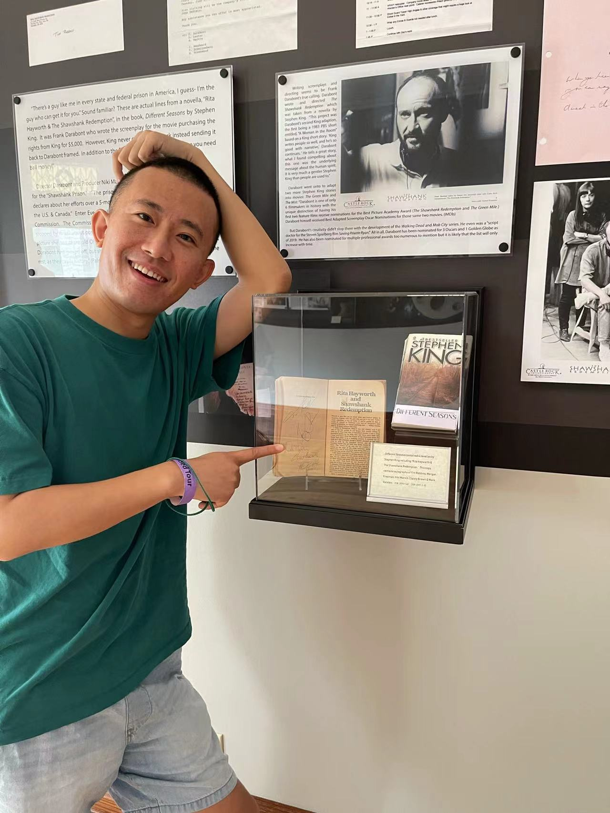

Prosodic cue reorganization
How do duration and F0 become reorganized into tone, quantity, tonal accent, and metrical structure? This line of work asks how phonetic cue relations become prosodic grammar through sound change.

PROSODIC PHONOLOGY · PHONOLOGY–PHONETICS INTERFACE · SOUND CHANGE
I am a Ph.D. student in Linguistics at The Ohio State University, where I work with Rebecca L. Morley and Björn Köhnlein. I am a phonologist working at the phonology–phonetics interface, with a focus on prosodic structure, markedness, and typologically rare prosodic phenomena.
My research asks how phonetic cue systems become organized into prosodic grammar, and what this process reveals about tone, quantity, laryngeal contrasts, metrical structure, positional asymmetries, and possible universal constraints on prosodic representation. I use perceptual and articulatory experiments, acoustic analysis, and artificial-language learning to study synchronic prosodic representation, and computational modeling to study the historical pathways through which phonological grammars emerge, stabilize, and change.
Updates
I will attend LabPhon 20 in Montréal and give a talk, Equilibrium dynamics of near-merger: Functional load and contrast persistence.
Slides forthcoming Abstract
I presented a poster on Cantonese tone near-merger at Speech Prosody 2026 in Philadelphia.
Research
How do duration and F0 become reorganized into tone, quantity, tonal accent, and metrical structure? This line of work asks how phonetic cue relations become prosodic grammar through sound change.
Why do some phonological contrasts persist, merge, or reorganize? I use production–perception experiments and computational models to study contrast maintenance, near-merger, cue reliability, and functional load.
I study tone, laryngeal cues, and prosodic structure in Germanic and Southeast Asian languages, with additional work on quantitative morphology and lexical structure.
Projects
Many languages distinguish short and long vowels, but stable three-way quantity systems are much rarer. This project asks whether apparent ternary vowel length should be represented as a simple extension of moraic quantity, or whether such systems require a different prosodic analysis. Based on acoustic data from the Leer dialect of East Frisian Low German, we show that the long–overlong contrast is primarily durational, extends beyond the classical monosyllabic environment, and is not reducible to vowel quality, lexical tone, or residual consonant voicing. We argue instead that overlength reflects a difference in metrical structure: long and overlong vowels are both bimoraic, but they are parsed into different kinds of trochaic feet.
Near-merger is often treated as a transitional stage between contrast and merger, but it may also be a stable outcome of production–perception dynamics. This project develops a computational model of the Cantonese T2–T5 contrast, separating production and perception while allowing them to interact through lexical experience. The model shows that lexical structure matters: minimal-pair words promote contrast-enhancing hyperarticulation, while singleton words allow undershoot and category drift. The result is a theory of near-merger as an equilibrium state, where small production differences can persist even when perception becomes unreliable. More broadly, the project asks how functional load shapes the stability, loss, and reorganization of phonological contrasts.
Khmer is often described as having fossilized historical prefixation but productive compounding. This project asks whether that contrast can be demonstrated quantitatively, rather than assumed from traditional description. Using corpus-based measures of productivity, semantic transparency, and semantic-shift structure, I compare historical prefix families with subordinate and coordinate compound families. The results complicate a simple fossilized-versus-active division: family size and hapax-based productivity alone do not distinguish historical prefixation from compounding, and some prefix families retain coherent stem-to-derived-form semantic shifts. The clearest contrast instead lies in the organization of semantic shift: productive subordinate compounds are more semantically constrained relative to family size, while prefix families show broader historical dispersion.